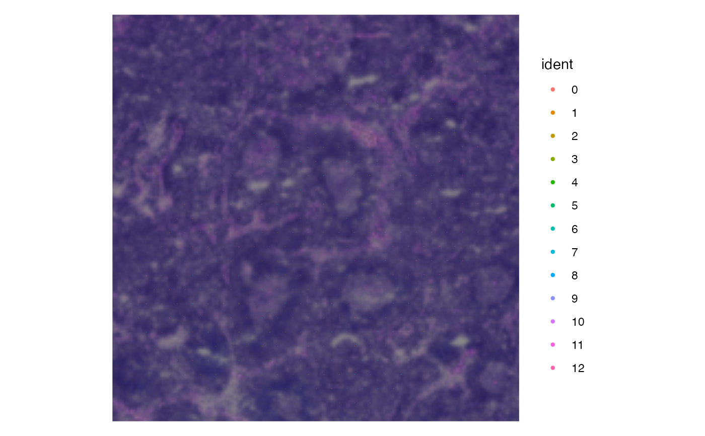
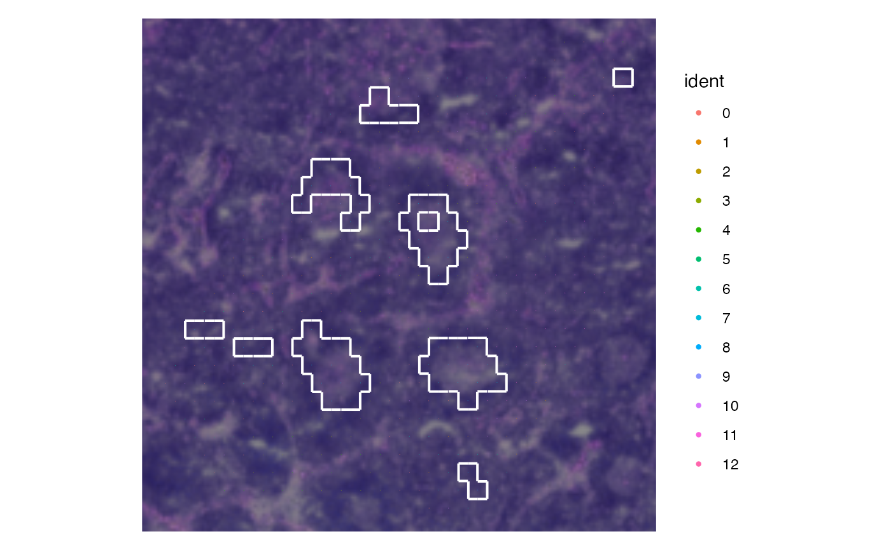
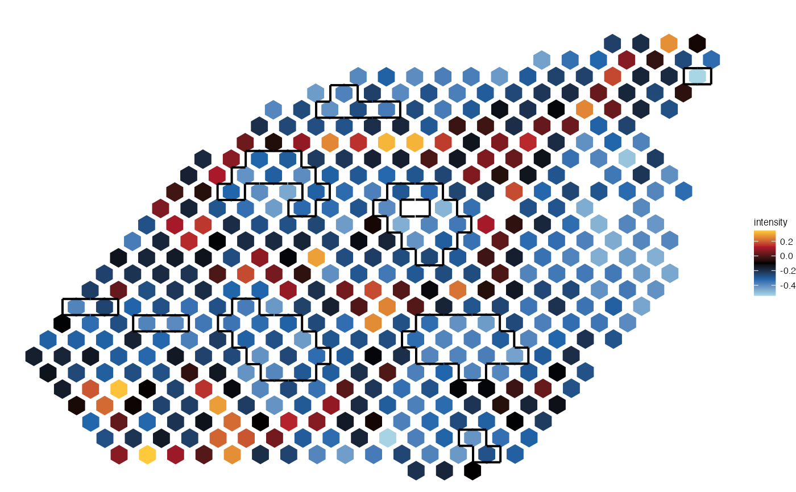

Draw a hull around a region of interest of Visium data.
display_hull(
data = NULL,
ident = NULL,
size_x = 2.4,
size_y = 2,
step_x = 2.6,
step_y = 2.4,
delta = 0.3,
color = "white",
hull_type = c("walls", "ggforce"),
expand = unit(0.05, "mm"),
radius = unit(0.5, "mm"),
concavity = 1,
size = 0.7
)A Seurat spatial object (Visium technology) or a data.frame (spot coordinates).
A binary vector whose length correspond to the number of columns/spots in the seurat object. 1 corresponds to the spots of the class of interest for which a hull is to be displayed
The size of the square (x axis)
The size of the square (y axis)
The distance between two points on the x axis.
The distance between two points on the y axis.
Add more or less flexibility to search for neighbor points
A color for the hull.
The method for drawing the hull: 'ggforce' (see ggforce::geom_mark_hull) or 'wall'. If wall, segment wont be connected but this will frequently allows to obtain a better delimited hull.
For hull_type 'ggforce'. A numeric or unit vector of length one, specifying the expansion amount.
For hull_type 'ggforce'. As expand but specifying the corner radius.
A measure of the concavity of the hull. 1 is very concave while it approaches convex as it grows. Defaults to 2.
The line width.
A ggplot object (with segments).
library(Seurat)
load_example_dataset("7870305/files/lymph_node_tiny_2")
#> |-- INFO : Dataset 7870305/files/lymph_node_tiny_2 was already loaded.
load_example_dataset("7870305/files/lymph_node_tiny_clusters_2")
#> |-- INFO : Dataset 7870305/files/lymph_node_tiny_clusters_2 was already loaded.
lymph_node_tiny_2 <- Seurat::AddModuleScore(lymph_node_tiny_2, features = lymph_node_tiny_clusters_2@gene_clusters, nbin = 10)
p <- Seurat::SpatialDimPlot(lymph_node_tiny_2, pt.size.factor = 4)
p

hull <- display_hull(lymph_node_tiny_2,
ident=ifelse(Seurat::Idents(lymph_node_tiny_2) %in% c(7, 8), 1, 0),
delta=1, size_x=3.4, size_y=3)
#> |-- INFO : Creating a dataframe to store output
#> |-- INFO : Creating a list of neighborhoods.
#> |-- INFO : Looping over the points.
p + hull

p <- plot_spatial(lymph_node_tiny_2, metadata = "Cluster3", pt_size = 5)
#> |-- INFO : Feature is not a factor.
hull <- display_hull(lymph_node_tiny_2,
ident=ifelse(Seurat:: Idents(lymph_node_tiny_2) %in% c(7, 8), 1, 0),
delta=1, size_x=3.4, size_y=3, color="black")
#> |-- INFO : Creating a dataframe to store output
#> |-- INFO : Creating a list of neighborhoods.
#> |-- INFO : Looping over the points.
p + hull
